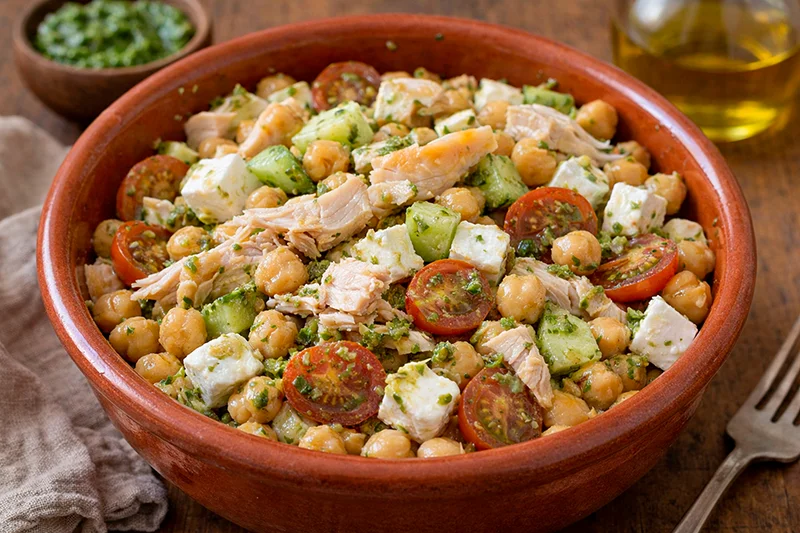

Receta saludable
Garbanzos al pesto con pollo y feta
Un plato completo y muy fácil de preparar, con garbanzos, pechuga de pollo, tomates cherry, pepino, pesto y queso feta para una comida fresca, nutritiva y llena de sabor.
Ingredientes
- 400 g de garbanzos cocidos
- 1 pechuga de pollo
- 100 g de queso feta
- 12 tomates cherry
- 1/2 pepino
- 2 cucharadas de pesto
- 1 cucharada de aceite de oliva
- Sal
- Pimienta negra
- Pimentón, ajo en polvo o mezcla de especias al gusto (opcional)
Preparación
- Cocina la pechuga de pollo a la plancha con un poco de aceite, sal y pimienta, y córtala en tiras o dados.
- Lava y escurre bien los garbanzos.
- Si quieres darles un toque más crujiente, mézclalos con especias y cocínalos unos minutos en la airfryer.
- Corta los tomates cherry por la mitad y el pepino en medias lunas o dados.
- En un bol grande mezcla los garbanzos con el pesto hasta que queden bien impregnados.
- Añade el pollo, los tomates cherry y el pepino.
- Desmenuza el queso feta por encima y mezcla suavemente.
- Sirve al momento y ajusta de sal y pimienta si hace falta.
Consejo práctico
Si pasas los garbanzos por la airfryer con un poco de especias, la receta gana mucho en textura y contraste con el feta y el pesto.